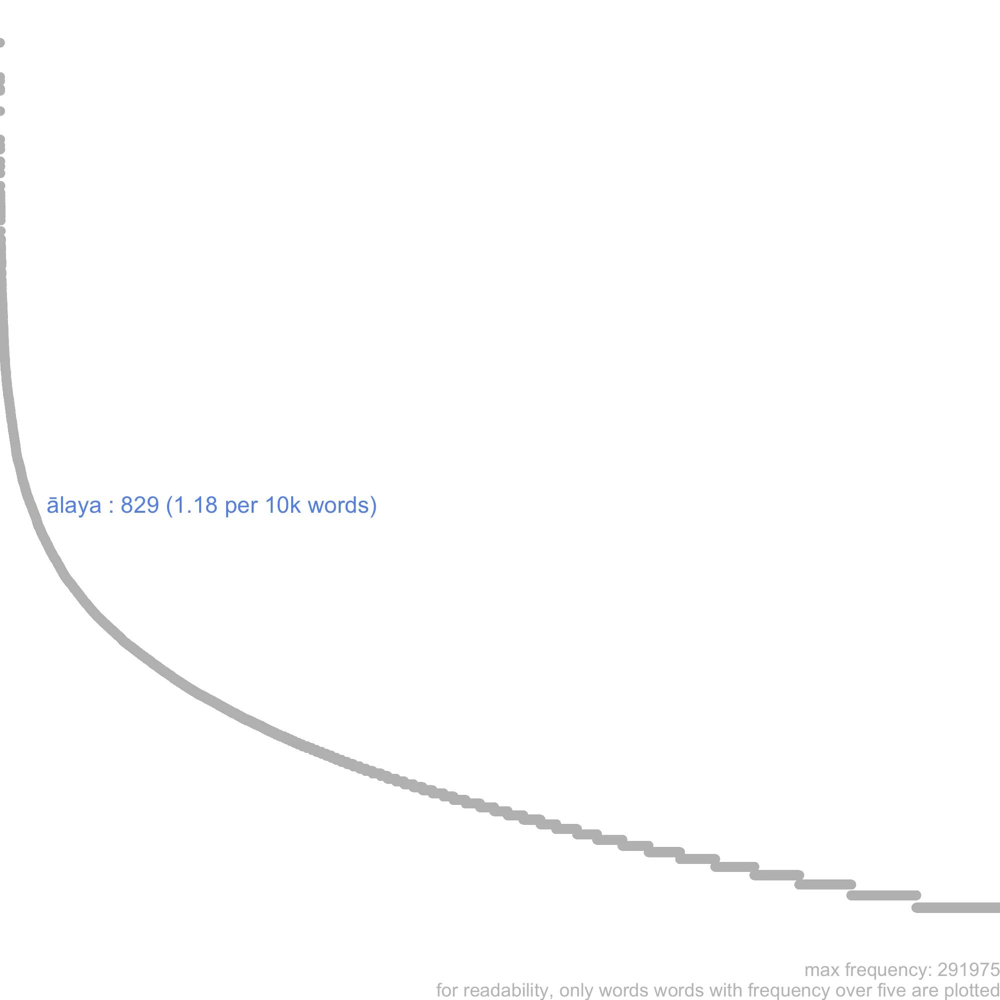

3 ālaya
This is an automated entry, use with care
ideally here we should put some curated information, e.g. the senses of this word attested in our corpus. but for now, let’s just display some information about ālaya that we have automatically extracted from our corpus.
3.1 frequency
ālaya is not frequent in the corpus, with a total of 829 occurrences.
See the Graph tab for an illustration of ālaya’s frequency relative to the other lemmata in our corpus.1

3.2 collocates
significant collocates of ālaya in our corpus include: makara, jina, velā, sāgara, yā, su, vajra, tri, sva and sat
LEGEND
compounded
modifier
object
subject
in list
no dependency
3.3 examples
evaṃ caranti ye lokā ahorātra vrataṃ mudā te sarva pāpa nirmuktāḥ saṃpray ^āyur jin ^ālayam [ahorAtravratacaityasevAnuzaMsAvadAna, 135]
yāvaj jīvaṃ sukhaṃ bhuktvā saṃsthāpya svavaśe jagat saṃbuddha śaraṇaṃ gatvā prānte yāyāṃ jin ^ālayam [ahorAtravratacaityasevAnuzaMsAvadAna, 185]
tathā sarve api te nāgā yāvaj jīvaṃ mahat sukham bhuktvā puṇy ^ānubhāvaiś ca prānte yayur jin ^ālayam [ahorAtravratacaityasevAnuzaMsAvadAna, 194]
tatas tau dampatī c ^āpi yāvaj jīvaṃ jin ^ārcanam kṛtvā saukhyaṃ prabhuktvānte saṃj agmāte jin ^ālayam [ahorAtravratacaityasevAnuzaMsAvadAna, 346]
etat puṇy ^ānubhāvais te sarvatra man galaṃ bhavet sarvadā sat sukhaṃ bhuktvā yāyāś c ^ānte jin ^ālayam [ahorAtravratacaityasevAnuzaMsAvadAna, 352]
etat puṇy ^ānubhāvena n ^aiva gacchanti durgatim sarvadā sa śubhaṃ saukhyaṃ bhuktvā yānti jin ^ālayam [ahorAtravratacaityasevAnuzaMsAvadAna, 42]
an avabodhād bālānāṃ bhūmi kram ^ānusaṃdhi vyapadeśaṃ traidhātuka vicitr ^opacāraś ca vyavasthāpyate buddha dharm ^ālayā ca [laGkAvatArasUtra, 86]
udadheḥ pariṇāmo asau taraṃgāṇāṃ vicitratā ālayaṃ hi tathā citraṃ vijñān ^ākhyaṃ pravartate [laGkAvatArasUtra, 132]
cittaṃ vikalpo vijñaptir mano vijñānam eva ca ālayaṃ tribhavaś ceṣṭā ete cittasya paryayāḥ [laGkAvatArasUtra, 137]
yena parikalpita svabhāva gati prabhedena su prativibhāga viddhena pudgala dharma nairātmya pracāraṃ prativiśodhya bhūmiṣu kṛta vidyāḥ sarva śrāvaka pratyekabuddha tīrthakara dhyāna samādhi samāpatti sukham atikramya tathāgat ā cintya viṣaya pracāra gati pracāraṃ pañcadharma svabhāva gati vinivṛttaṃ tathāgataṃ dharmakāyaṃ prajñā jñāna suni baddha dharmaṃ māyā viṣay ^ābhinivṛttaṃ sarva buddha kṣetra tuṣita bhavan kaniṣṭh ^ālay ^opagaṃ tathāgata kāyaṃ pratilabheran [laGkAvatArasUtra, 23]
ye an eka paryāyeṇa kāma rāgaṃ kāmacchandaṃ kām ^ālayaṃ kāma niyantiṃ kām ^ādhyavasānaṃ vigarhanti vivarṇayanti vijugupsayanti [zrAvakabhUmi, śbhi-154]
this entry is based on version 2.0 of the Mangalam Corpus of Buddhist Sanskrit Literature.↩︎